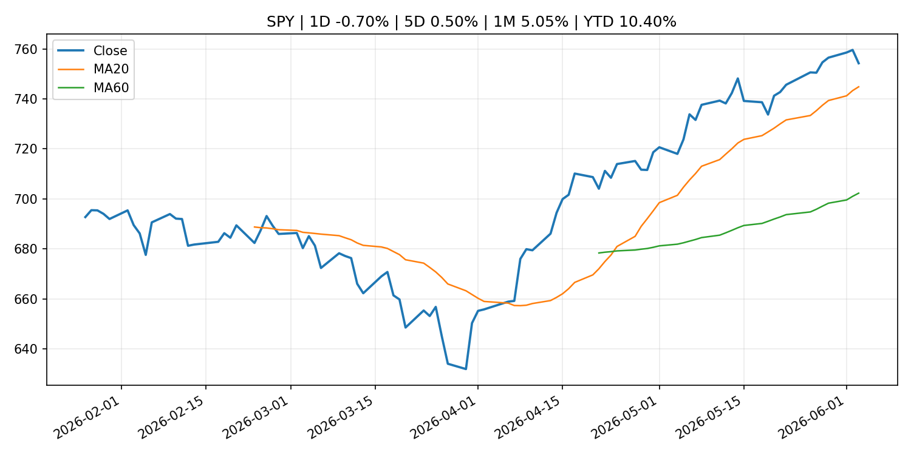
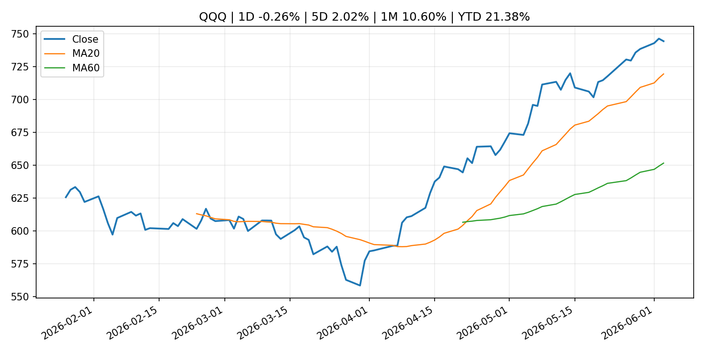
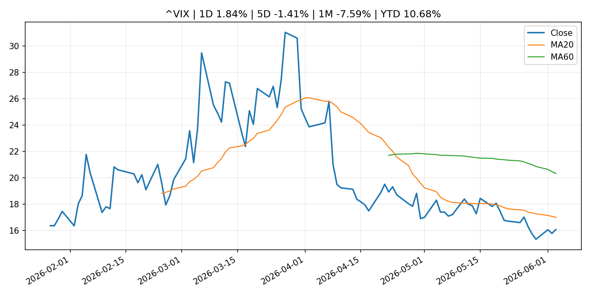
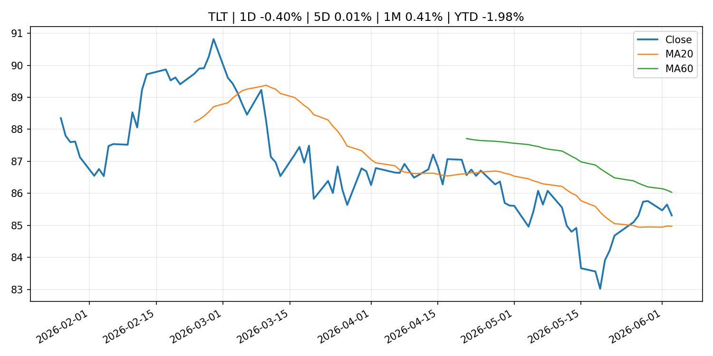
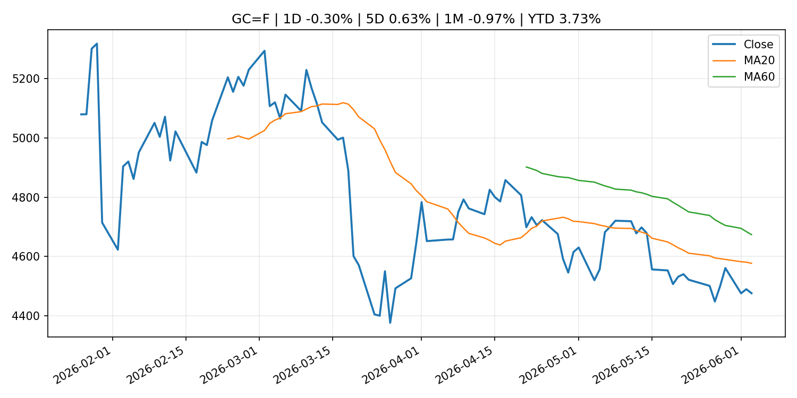
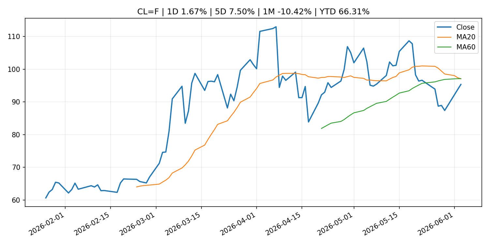
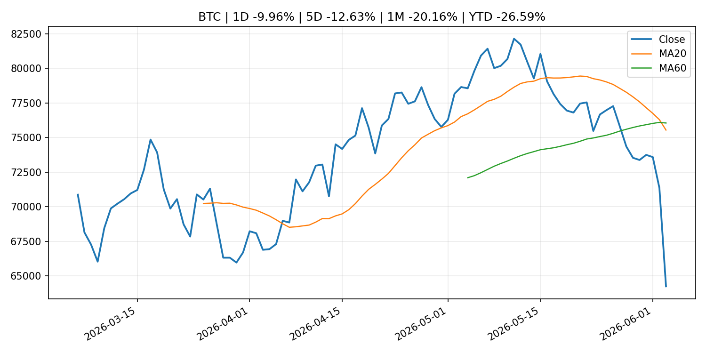
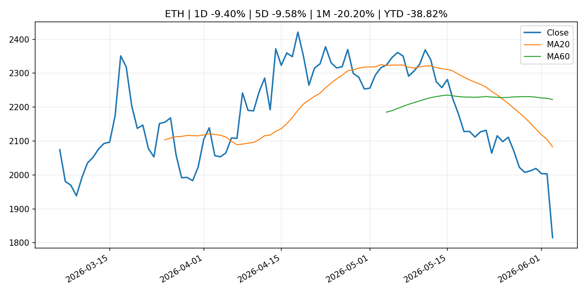
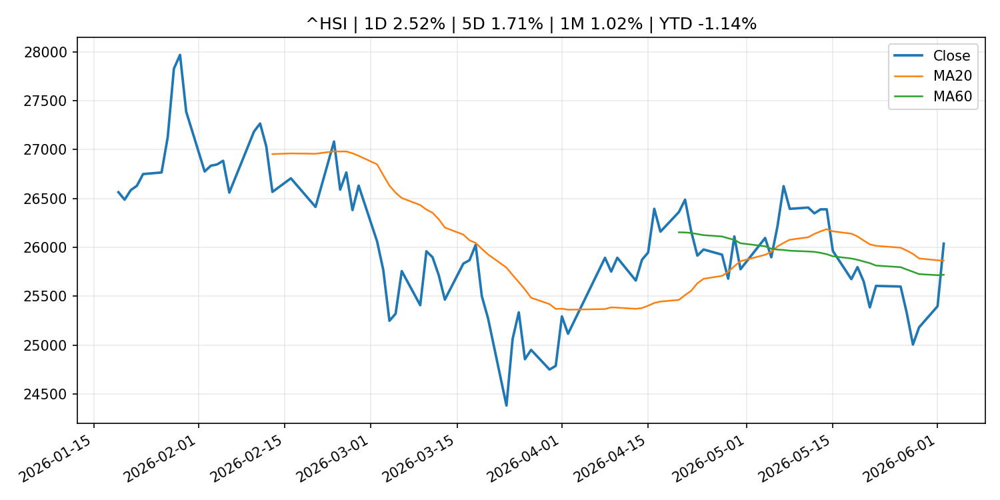

Global Macro Morning Briefing - 2026-06-04
Not financial advice / 非投资建议。
0. 今日总览
- 市场状态：unknown。市场信号不足，暂不判断明确状态。
- 今日三大主线：
- financial_stability: SpaceX targets record $75 billion IPO as bitcoin treasury and liquidity risks draw focus
- financial_stability: Bitwise model puts bitcoin fair value at $224,000 as sovereign-default hedge
- crypto_market_structure: Payment giants Stripe, Visa, Mastercard said to be among backers of soon-to-debut stablecoin platform
- 一句话结论：今日晨报重点关注：金融稳定信号可能放大跨资产波动，并影响央行反应函数。；金融稳定信号可能放大跨资产波动，并影响央行反应函数。。跨资产方面，SPY 1D -0.70%；QQQ 1D -0.26%；^VIX 1D 1.84%；TLT 1D -0.40%；GC=F 1D -0.30%；CL=F 1D 1.67%；BTC 1D -9.96%；ETH 1D -9.40%；市场信号不足，暂不判断明确状态。政策、通胀、利率、美元、美债、能源和加密监管仍是主要观察线索。所有结论仅基于公开数据与短摘要整理，不构成投资建议。
1. 隔夜跨资产市场
- 美股：SPY 1D -0.70%，QQQ 1D -0.26%，整体趋势需结合 VIX 和利率确认。
- 美债/美元：TLT 1D -0.40%，美元指数 1D 0.33%，是判断折现率压力的核心线索。
- 黄金/原油：黄金 1D -0.30%，原油 1D 1.67%，用于观察避险、通胀和地缘风险。
- 加密：BTC 1D -9.96%，ETH 1D -9.40%，关注是否独立于纳指走出加密自身行情。
- 港股/A股：恒生 1D 2.52%，沪深300/上证 1D n/a，重点看中国政策预期与人民币线索。
- 风险观察：关注后续数据是否确认当前跨资产信号。
US_EQUITY
| symbol | latest close | 1D | 5D | 1M | YTD | trend |
|---|---|---|---|---|---|---|
| SPY | 754.24 | -0.70% | 0.50% | 5.05% | 10.40% | strong_uptrend |
| QQQ | 744.21 | -0.26% | 2.02% | 10.60% | 21.38% | strong_uptrend |
| DIA | 508.26 | -1.13% | 0.27% | 3.82% | 5.09% | strong_uptrend |
| IWM | 287.67 | -1.37% | -0.93% | 3.52% | 15.63% | strong_uptrend |
| VTI | 371.65 | -0.72% | 0.62% | 4.99% | 10.51% | strong_uptrend |
US_MACRO_MARKET
| symbol | latest close | 1D | 5D | 1M | YTD | trend |
|---|---|---|---|---|---|---|
| ^VIX | 16.06 | 1.84% | -1.41% | -7.59% | 10.68% | strong_downtrend |
| DX-Y.NYB | 99.55 | 0.33% | 0.34% | 1.10% | 1.15% | range_bound |
| TLT | 85.31 | -0.40% | 0.01% | 0.41% | -1.98% | range_bound |
| IEF | 94.00 | -0.25% | -0.34% | -0.41% | -2.16% | downtrend |
COMMODITIES
| symbol | latest close | 1D | 5D | 1M | YTD | trend |
|---|---|---|---|---|---|---|
| GC=F | 4,475.50 | -0.30% | 0.63% | -0.97% | 3.73% | downtrend |
| SI=F | 73.34 | -2.62% | -1.69% | 0.37% | 3.95% | range_bound |
| CL=F | 95.33 | 1.67% | 7.50% | -10.42% | 66.31% | strong_downtrend |
| BZ=F | 97.19 | 1.24% | 3.08% | -15.07% | 59.98% | strong_downtrend |
| NG=F | 3.24 | 2.21% | 6.48% | 12.91% | -10.53% | strong_uptrend |
| HG=F | 6.49 | -2.39% | 2.94% | 12.00% | 15.08% | uptrend |
HK_MARKET
| symbol | latest close | 1D | 5D | 1M | YTD | trend |
|---|---|---|---|---|---|---|
| ^HSI | 26,038.32 | 2.52% | 1.71% | 1.02% | -1.14% | uptrend |
| 0700.HK | 466.40 | -3.16% | 7.37% | -1.40% | -25.14% | range_bound |
| 9988.HK | 126.60 | -3.28% | 1.85% | -3.87% | -15.03% | range_bound |
| 3690.HK | 80.40 | -5.96% | 3.47% | -4.80% | -23.14% | strong_downtrend |
| 1810.HK | 28.58 | -3.51% | 0.63% | -7.75% | -29.05% | strong_downtrend |
| 1211.HK | 93.25 | -3.62% | 2.81% | -9.47% | -5.57% | strong_downtrend |
CRYPTO
| symbol | latest close | 1D | 5D | 1M | YTD | trend |
|---|---|---|---|---|---|---|
| BTC | 64,252.18 | -9.96% | -12.63% | -20.16% | -26.59% | strong_downtrend |
| ETH | 1,815.14 | -9.40% | -9.58% | -20.20% | -38.82% | strong_downtrend |
| SOLANA | 71.59 | -11.76% | -12.62% | -24.09% | -42.51% | strong_downtrend |
| BINANCECOIN | 621.62 | -10.23% | -2.52% | -6.49% | -27.98% | range_bound |
| RIPPLE | 1.20 | -7.20% | -8.49% | -16.34% | -34.68% | strong_downtrend |
2. 今日最重要的 10 条新闻
1. SpaceX targets record $75 billion IPO as bitcoin treasury and liquidity risks draw focus
- 来源：CoinDesk
- 时间：2026-06-03T22:31:12+00:00
- 地区：global
- 事件类型：financial_stability
- 重要性层级：Tier 1
- 一句话摘要：SpaceX targets record $75 billion IPO as bitcoin treasury and liquidity risks draw focus
- 为什么重要：金融稳定信号可能放大跨资产波动，并影响央行反应函数。
- 可能影响：可能影响利率、汇率、风险资产或大宗商品预期，但当前公开信息不足以判断明确方向。
- 资产：暂无明确资产映射
- 方向：unknown
- 强度：low
- 原因：公开信息不足以判断方向。
- 原文链接：https://www.coindesk.com/markets/2026/06/03/spacex-targets-record-usd75-billion-ipo-as-bitcoin-treasury-and-liquidity-risks-draw-focus
2. Bitwise model puts bitcoin fair value at $224,000 as sovereign-default hedge
- 来源：CoinDesk
- 时间：2026-06-03T13:26:02+00:00
- 地区：global
- 事件类型：financial_stability
- 重要性层级：Tier 1
- 一句话摘要：Bitwise model puts bitcoin fair value at $224,000 as sovereign-default hedge
- 为什么重要：金融稳定信号可能放大跨资产波动，并影响央行反应函数。
- 可能影响：可能影响利率、汇率、风险资产或大宗商品预期，但当前公开信息不足以判断明确方向。
- 资产：暂无明确资产映射
- 方向：unknown
- 强度：low
- 原因：公开信息不足以判断方向。
- 原文链接：https://www.coindesk.com/markets/2026/06/03/bitwise-model-puts-bitcoin-fair-value-at-usd224-000-as-sovereign-default-hedge
3. Payment giants Stripe, Visa, Mastercard said to be among backers of soon-to-debut stablecoin platform
- 来源：CoinDesk
- 时间：2026-06-03T11:47:36+00:00
- 地区：global
- 事件类型：crypto_market_structure
- 重要性层级：Tier 2
- 一句话摘要：Payment giants Stripe, Visa, Mastercard said to be among backers of soon-to-debut stablecoin platform
- 为什么重要：加密市场结构和监管变化会影响 BTC、ETH 及相关股票的风险溢价。
- 可能影响：主要影响 BTC，方向为 mixed，强度 high；加密监管或 ETF 进展会改变 BTC 的资金流和风险溢价。
- 资产：BTC 方向：mixed 强度：high 原因：加密监管或 ETF 进展会改变 BTC 的资金流和风险溢价。
- 资产：ETH 方向：mixed 强度：high 原因：监管框架会影响 ETH 产品化和机构参与度。
- 资产：COIN 方向：mixed 强度：medium 原因：监管清晰度和执法风险会影响交易平台估值。
- 资产：crypto market 方向：mixed 强度：high 原因：信息影响整个加密市场结构，但方向取决于细节。
- 原文链接：https://www.coindesk.com/business/2026/06/03/payment-giants-stripe-visa-mastercard-said-to-be-among-backers-of-soon-to-debut-stablecoin-platform
4. SEC Publishes Draft Strategic Plan for Public Comment
- 来源：SEC Press Releases
- 时间：2026-06-02T10:30:00-04:00
- 地区：US
- 事件类型：regulation
- 重要性层级：Tier 2
- 一句话摘要：The Securities and Exchange Commission today published a Draft Strategic Plan that focuses on returning the agency to the core mission set by Congress more than 90 years ago: protecting investors; maintaining fair, orderly, and efficient…
- 为什么重要：监管变化会改变行业盈利预期和资产风险溢价。
- 可能影响：主要影响 BTC，方向为 mixed，强度 high；加密监管或 ETF 进展会改变 BTC 的资金流和风险溢价。
- 资产：BTC 方向：mixed 强度：high 原因：加密监管或 ETF 进展会改变 BTC 的资金流和风险溢价。
- 资产：ETH 方向：mixed 强度：high 原因：监管框架会影响 ETH 产品化和机构参与度。
- 资产：COIN 方向：mixed 强度：medium 原因：监管清晰度和执法风险会影响交易平台估值。
- 资产：crypto market 方向：mixed 强度：high 原因：信息影响整个加密市场结构，但方向取决于细节。
- 原文链接：https://www.sec.gov/newsroom/press-releases/2026-51-sec-publishes-draft-strategic-plan-public-comment
5. CrowdStrike’s stock falls as investors find more reason to pan cybersecurity earnings
- 来源：MarketWatch Top Stories
- 时间：2026-06-03T23:16:00+00:00
- 地区：US
- 事件类型：earnings
- 重要性层级：Tier 2
- 一句话摘要：Like Palo Alto Networks before it, CrowdStrike beats financial expectations but sees its stock get punished
- 为什么重要：大型科技股盈利和资本开支会影响纳指、半导体和 AI 交易主线。
- 可能影响：可能影响利率、汇率、风险资产或大宗商品预期，但当前公开信息不足以判断明确方向。
- 资产：暂无明确资产映射
- 方向：unknown
- 强度：low
- 原因：公开信息不足以判断方向。
- 原文链接：https://www.marketwatch.com/story/crowdstrikes-stock-falls-as-investors-find-more-reason-to-pan-cybersecurity-earnings-d1b5f619?mod=mw_rss_topstories
6. Speech by Governor UEDA at the Kisaragi-kai Meeting in Tokyo
- 来源：Bank of Japan Announcements
- 时间：2026-06-03T17:30:00+09:00
- 地区：Japan
- 事件类型：central_bank_speech
- 重要性层级：Tier 2
- 一句话摘要：Speech by Governor UEDA at the Kisaragi-kai Meeting in Tokyo
- 为什么重要：央行官员表态可能影响市场对下一次会议的定价。
- 可能影响：可能影响利率、汇率、风险资产或大宗商品预期，但当前公开信息不足以判断明确方向。
- 资产：暂无明确资产映射
- 方向：unknown
- 强度：low
- 原因：公开信息不足以判断方向。
- 原文链接：http://www.boj.or.jp/en/about/press/koen_2026/ko260603a.htm
7. ‘Squeezing more life out of every dollar’: How inflation is forcing a new reality on American families and amplifying the economy’s ‘K shape’
- 来源：MarketWatch Top Stories
- 时间：2026-06-03T21:03:00+00:00
- 地区：US
- 事件类型：other
- 重要性层级：Tier 3
- 一句话摘要：Higher prices are crimping spending among lower- and middle-income consumers, the Fed’s beige book reports.
- 为什么重要：这条信息暂未匹配到重大宏观、政策或市场事件，更适合作为背景跟踪。
- 可能影响：主要影响 DXY，方向为 positive，强度 high；通胀压力可能推高政策利率预期并支撑美元。
- 资产：DXY 方向：positive 强度：high 原因：通胀压力可能推高政策利率预期并支撑美元。
- 资产：TLT 方向：negative 强度：high 原因：通胀上行通常推升收益率、压低长债价格。
- 资产：QQQ 方向：negative 强度：high 原因：更高利率对成长股估值折现率不利。
- 资产：SPY 方向：mixed 强度：medium 原因：名义增长可能支撑收入，但更高利率压制估值。
- 资产：GC=F 方向：mixed 强度：medium 原因：通胀对黄金是支撑，但实际利率上行会形成压力。
- 资产：BTC 方向：mixed 强度：medium 原因：抗通胀叙事和流动性收紧可能相互抵消。
- 原文链接：https://www.marketwatch.com/story/squeezing-more-life-out-of-every-dollar-how-inflation-is-forcing-a-new-reality-on-american-families-and-amplifying-the-economys-k-shape-c3ba42de?mod=mw_rss_topstories
8. Grayscale launches lowest-fee U.S. Hyperliquid ETF as competition heats up around HYPE
- 来源：CoinDesk
- 时间：2026-06-03T12:00:00+00:00
- 地区：global
- 事件类型：other
- 重要性层级：Tier 3
- 一句话摘要：Grayscale launches lowest-fee U.S. Hyperliquid ETF as competition heats up around HYPE
- 为什么重要：这条信息暂未匹配到重大宏观、政策或市场事件，更适合作为背景跟踪。
- 可能影响：主要影响 BTC，方向为 mixed，强度 high；加密监管或 ETF 进展会改变 BTC 的资金流和风险溢价。
- 资产：BTC 方向：mixed 强度：high 原因：加密监管或 ETF 进展会改变 BTC 的资金流和风险溢价。
- 资产：ETH 方向：mixed 强度：high 原因：监管框架会影响 ETH 产品化和机构参与度。
- 资产：COIN 方向：mixed 强度：medium 原因：监管清晰度和执法风险会影响交易平台估值。
- 资产：crypto market 方向：mixed 强度：high 原因：信息影响整个加密市场结构，但方向取决于细节。
- 原文链接：https://www.coindesk.com/markets/2026/06/03/grayscale-launches-lowest-fee-u-s-hyperliquid-etf-as-competition-heats-up-around-hype
3. 政策与央行观察
1. SpaceX targets record $75 billion IPO as bitcoin treasury and liquidity risks draw focus
- 来源：CoinDesk
- 时间：2026-06-03T22:31:12+00:00
- 地区：global
- 事件类型：financial_stability
- 重要性层级：Tier 1
- 一句话摘要：SpaceX targets record $75 billion IPO as bitcoin treasury and liquidity risks draw focus
- 为什么重要：金融稳定信号可能放大跨资产波动，并影响央行反应函数。
- 可能影响：可能影响利率、汇率、风险资产或大宗商品预期，但当前公开信息不足以判断明确方向。
- 资产：暂无明确资产映射
- 方向：unknown
- 强度：low
- 原因：公开信息不足以判断方向。
- 原文链接：https://www.coindesk.com/markets/2026/06/03/spacex-targets-record-usd75-billion-ipo-as-bitcoin-treasury-and-liquidity-risks-draw-focus
2. Bitwise model puts bitcoin fair value at $224,000 as sovereign-default hedge
- 来源：CoinDesk
- 时间：2026-06-03T13:26:02+00:00
- 地区：global
- 事件类型：financial_stability
- 重要性层级：Tier 1
- 一句话摘要：Bitwise model puts bitcoin fair value at $224,000 as sovereign-default hedge
- 为什么重要：金融稳定信号可能放大跨资产波动，并影响央行反应函数。
- 可能影响：可能影响利率、汇率、风险资产或大宗商品预期，但当前公开信息不足以判断明确方向。
- 资产：暂无明确资产映射
- 方向：unknown
- 强度：low
- 原因：公开信息不足以判断方向。
- 原文链接：https://www.coindesk.com/markets/2026/06/03/bitwise-model-puts-bitcoin-fair-value-at-usd224-000-as-sovereign-default-hedge
3. Payment giants Stripe, Visa, Mastercard said to be among backers of soon-to-debut stablecoin platform
- 来源：CoinDesk
- 时间：2026-06-03T11:47:36+00:00
- 地区：global
- 事件类型：crypto_market_structure
- 重要性层级：Tier 2
- 一句话摘要：Payment giants Stripe, Visa, Mastercard said to be among backers of soon-to-debut stablecoin platform
- 为什么重要：加密市场结构和监管变化会影响 BTC、ETH 及相关股票的风险溢价。
- 可能影响：主要影响 BTC，方向为 mixed，强度 high；加密监管或 ETF 进展会改变 BTC 的资金流和风险溢价。
- 资产：BTC 方向：mixed 强度：high 原因：加密监管或 ETF 进展会改变 BTC 的资金流和风险溢价。
- 资产：ETH 方向：mixed 强度：high 原因：监管框架会影响 ETH 产品化和机构参与度。
- 资产：COIN 方向：mixed 强度：medium 原因：监管清晰度和执法风险会影响交易平台估值。
- 资产：crypto market 方向：mixed 强度：high 原因：信息影响整个加密市场结构，但方向取决于细节。
- 原文链接：https://www.coindesk.com/business/2026/06/03/payment-giants-stripe-visa-mastercard-said-to-be-among-backers-of-soon-to-debut-stablecoin-platform
4. SEC Publishes Draft Strategic Plan for Public Comment
- 来源：SEC Press Releases
- 时间：2026-06-02T10:30:00-04:00
- 地区：US
- 事件类型：regulation
- 重要性层级：Tier 2
- 一句话摘要：The Securities and Exchange Commission today published a Draft Strategic Plan that focuses on returning the agency to the core mission set by Congress more than 90 years ago: protecting investors; maintaining fair, orderly, and efficient…
- 为什么重要：监管变化会改变行业盈利预期和资产风险溢价。
- 可能影响：主要影响 BTC，方向为 mixed，强度 high；加密监管或 ETF 进展会改变 BTC 的资金流和风险溢价。
- 资产：BTC 方向：mixed 强度：high 原因：加密监管或 ETF 进展会改变 BTC 的资金流和风险溢价。
- 资产：ETH 方向：mixed 强度：high 原因：监管框架会影响 ETH 产品化和机构参与度。
- 资产：COIN 方向：mixed 强度：medium 原因：监管清晰度和执法风险会影响交易平台估值。
- 资产：crypto market 方向：mixed 强度：high 原因：信息影响整个加密市场结构，但方向取决于细节。
- 原文链接：https://www.sec.gov/newsroom/press-releases/2026-51-sec-publishes-draft-strategic-plan-public-comment
5. Speech by Governor UEDA at the Kisaragi-kai Meeting in Tokyo
- 来源：Bank of Japan Announcements
- 时间：2026-06-03T17:30:00+09:00
- 地区：Japan
- 事件类型：central_bank_speech
- 重要性层级：Tier 2
- 一句话摘要：Speech by Governor UEDA at the Kisaragi-kai Meeting in Tokyo
- 为什么重要：央行官员表态可能影响市场对下一次会议的定价。
- 可能影响：可能影响利率、汇率、风险资产或大宗商品预期，但当前公开信息不足以判断明确方向。
- 资产：暂无明确资产映射
- 方向：unknown
- 强度：low
- 原因：公开信息不足以判断方向。
- 原文链接：http://www.boj.or.jp/en/about/press/koen_2026/ko260603a.htm
4. 市场异动与图表
- SPY 下跌 -0.70%
- DXY 上涨 0.33%
- Oil 上涨 1.67%
- BTC 下跌 -9.96%
- ETH 下跌 -9.40%
SPY

QQQ

^VIX

TLT

GC=F

CL=F

BTC

ETH

^HSI

5. 华尔街与机构公开观点
- 暂无可靠公开观点。
6. 今日重点关注
- 经济数据：经济数据：暂无可靠公开日历数据；如配置经济日历源后可自动填充。
- 央行讲话：央行讲话：暂无可靠公开日历数据；重点跟踪 Fed、ECB、BoJ、PBOC 官网 RSS。
- 财报：财报：暂无可靠数据。
- 政策事件：政策事件：暂无可靠数据。
- 风险提醒：风险提醒：关注数据源失败项、突发地缘风险、利率和美元的二阶反应。
7. 英文金融表达与宏观概念
- inflation expectations：通胀预期，指家庭、企业或市场对未来通胀的预估。 例句：Inflation expectations can shape wage bargaining and bond yields.
- real yield：实际收益率，名义利率扣除通胀预期后的收益率。 例句：Gold often reacts more to real yields than nominal yields.
- market structure：市场结构，指交易、托管、清算、ETF、监管等制度安排。 例句：Crypto market structure rules can affect institutional participation.
- terminal rate：终端利率，市场预期本轮加息周期的最高政策利率。 例句：A higher terminal rate can pressure growth stocks.
- soft landing：软着陆，指通胀回落而经济避免明显衰退。 例句：Markets often rally when data support a soft landing.
- risk-off：避险模式，资金偏向美元、国债、黄金等防御资产。 例句：A geopolitical shock can push markets into risk-off mode.
8. 背景材料
- I am 71. Would it be foolish to sell $10,000 in stock to visit my grandchildren in Thailand?（MarketWatch Top Stories，other）：“I am comfortable living on my Social Security and pension income.”
- ‘Squeezing more life out of every dollar’: How inflation is forcing a new reality on American families and amplifying the economy’s ‘K shape’（MarketWatch Top Stories，other）：Higher prices are crimping spending among lower- and middle-income consumers, the Fed’s beige book reports.
- Bitcoin set to slump to new lows for 2026 after recent sell-off, traders forecast（CNBC Economy，other）：The cryptocurrency is likely to break below its lows hit in early February, traders on prediction market Kalshi believe.
- Bitcoin isn't crashing because of Saylor, it's losing the momentum trade（CoinDesk，other）：Bitcoin isn't crashing because of Saylor, it's losing the momentum trade
- Rare physical bitcoin worth $1.78 million gets cashed in after 12 years（CoinDesk，other）：Rare physical bitcoin worth $1.78 million gets cashed in after 12 years
- Piero Cipollone: Europe’s money evolves so people’s freedom to pay remains（ECB Press Releases，other）：Piero Cipollone: Europe’s money evolves so people’s freedom to pay remains
- Bitcoin's dearth of fresh investors matters more than Strategy's sale, Citi says（CoinDesk，other）：Bitcoin's dearth of fresh investors matters more than Strategy's sale, Citi says
- CoinDesk 20 performance update: Bitcoin Cash (BCH) falls 10.7%, leading index lower（CoinDesk，other）：CoinDesk 20 performance update: Bitcoin Cash (BCH) falls 10.7%, leading index lower
- Live markets: bitcoin hits weakest level since late March as selling continues（CoinDesk，other）：Live markets: bitcoin hits weakest level since late March as selling continues
- Bitcoin hits Power Law level low that historically precedes a rebound（CoinDesk，other）：Bitcoin hits Power Law level low that historically precedes a rebound
- Grayscale launches lowest-fee U.S. Hyperliquid ETF as competition heats up around HYPE（CoinDesk，other）：Grayscale launches lowest-fee U.S. Hyperliquid ETF as competition heats up around HYPE
- Bitcoin momentum gauge hints at recovery. Experts remain cautious.（CoinDesk，other）：Bitcoin momentum gauge hints at recovery. Experts remain cautious.
- Bitcoin steadies at $67,000, faces critical juncture after sliding 9.5% in seven days（CoinDesk，other）：Bitcoin steadies at $67,000, faces critical juncture after sliding 9.5% in seven days
- Frank Elderson: Strengthening operational resilience for the age of AI（ECB Press Releases，other）：Frank Elderson: Strengthening operational resilience for the age of AI
- Sources of Changes in Current Account Balances (Projections for June)（Bank of Japan Announcements，other）：Sources of Changes in Current Account Balances (Projections for June)
- Goldman Sachs CEO David Solomon says markets are in 'greed' mode as AI companies seek billions（CNBC Economy，other）：Goldman Sachs CEO David Solomon's comments come as investors prepare for what will be one of the busiest periods for equity issuance in years.
- Agencies remove additional references to reputation risk（Federal Reserve Press Releases，other）：Agencies remove additional references to reputation risk
- Boris Vujčić: A European perspective on currency and convergence（ECB Press Releases，other）：Boris Vujčić: A European perspective on currency and convergence
- International role of the euro increased moderately in 2025（ECB Press Releases，other）：International role of the euro increased moderately in 2025
- Japanese Government Bonds Held by the Bank of Japan（Bank of Japan Announcements，other）：Japanese Government Bonds Held by the Bank of Japan
9. 数据源、失败项与免责声明
- 采集时间：2026-06-03T23:42:47
- 数据源：公开 RSS、Yahoo Finance、CoinGecko、AKShare、FRED、SEC data.sec.gov，以及用户自有 inputs/reports 文件。
- 合规说明：不绕过 WSJ、Bloomberg、FT、Reuters 等付费墙；对付费媒体只使用公开 RSS 标题、摘要、链接和发布时间。
- 免责声明：Not financial advice / 非投资建议。本项目仅供个人学习、研究和信息整理，不构成投资建议、交易建议或任何收益承诺。
- 失败或跳过的数据源：
- crypto data failed coin=dogecoin
- China market data failed symbol=上证指数: empty dataframe
- China market data failed symbol=深证成指: empty dataframe
- China market data failed symbol=创业板指: empty dataframe
- China market data failed symbol=沪深300: empty dataframe
- China market data failed symbol=中证500: empty dataframe
- China market data failed symbol=科创50: empty dataframe
- FRED_API_KEY not set; skipping FRED macro series
- SEC failed cik=0000320193
- SEC failed cik=0000789019
- SEC failed cik=0001045810
- SEC failed cik=0001318605
- SEC failed cik=0001577552